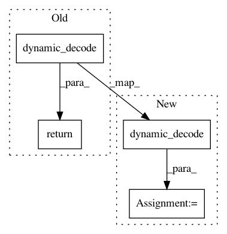

ce9d1c5795fbf67bf4980c575d6f4cf97132191f,opennmt/decoders/rnn_decoder.py,RNNDecoder,decode,#RNNDecoder#Any#Any#Any#Any#Any#Any#Any#,62
Before Change
initial_state,
output_layer=output_layer)
return tf.contrib.seq2seq.dynamic_decode(decoder)
def dynamic_decode(self,
embeddings,
start_tokens,
After Change
initial_state,
output_layer=output_layer)
outputs, states, length = tf.contrib.seq2seq.dynamic_decode(decoder)
return (outputs.rnn_output, states, length)
def dynamic_decode(self,
embeddings,
In pattern: SUPERPATTERN
Frequency: 3
Non-data size: 4
Instances
Project Name: OpenNMT/OpenNMT-tf
Commit Name: ce9d1c5795fbf67bf4980c575d6f4cf97132191f
Time: 2017-08-09
Author: guillaume.klein@systrangroup.com
File Name: opennmt/decoders/rnn_decoder.py
Class Name: RNNDecoder
Method Name: decode
Project Name: OpenNMT/OpenNMT-tf
Commit Name: ce9d1c5795fbf67bf4980c575d6f4cf97132191f
Time: 2017-08-09
Author: guillaume.klein@systrangroup.com
File Name: opennmt/decoders/rnn_decoder.py
Class Name: RNNDecoder
Method Name: dynamic_decode
Project Name: OpenNMT/OpenNMT-tf
Commit Name: ce9d1c5795fbf67bf4980c575d6f4cf97132191f
Time: 2017-08-09
Author: guillaume.klein@systrangroup.com
File Name: opennmt/decoders/rnn_decoder.py
Class Name: RNNDecoder
Method Name: dynamic_decode_and_search